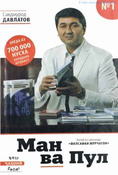

MVPul siz uchun ishlashi uchun qanday fikrlash kerakligini o'rgatuvchi kitob.
Bu kitob tojik tilida yozilgan bo'lib, Saidmurod Davlatovning 'Falsafai Murchagon' seriyasiga kiradi. Kitob o'quvchiga pul o'zi uchun ishlashi uchun qanday fikrlash kerakligini o'rgatadi va moliyaviy ozodlikka erishish yo'llarini ko'rsatadi. 700 000 dan ortiq nusxada sotilgan bestseller sifatida tanilgan.